Arquitetura autoral
Espaços que contam histórias.
Projetos pensados para acolher sua rotina e expressar sua identidade.
Uma ideia ganha forma, matéria e vida. Arquitetura e paisagismo para conectar o habitar à natureza.
Explorar o projeto
Criar ecossistemas de bem-estar que conectam o ser humano à natureza através de uma arquitetura consciente e inspiradora.
Selecione um ambiente. Acompanhe o passeio pela residência 3D e descubra as composições de cada ambiente.
O que você viu aqui em 3D pode ser a sua casa. Conte sua ideia e receba o caminho para tirá-la do papel.
Estudo 3D interativo. Modelo de terceiros (“Modern House”, BlenderKit, licença Royalty Free), otimizado para a web e usado temporariamente como referência. Será substituído por um projeto MOSARQ.
Projetos pensados para acolher sua rotina e expressar sua identidade.
Da distribuição dos ambientes à escolha de materiais, iluminação e mobiliário.
Converse com Johnathan Mosanik Antoneti sobre seu projeto de arquitetura, interiores e paisagismo.
Conversar pelo WhatsAppArquitetura, interiores e paisagismo em uma só linguagem.